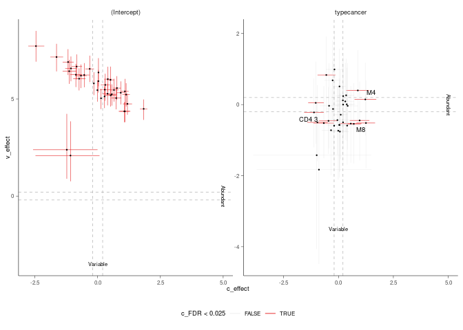
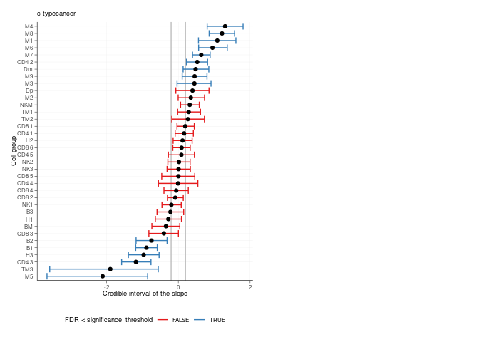
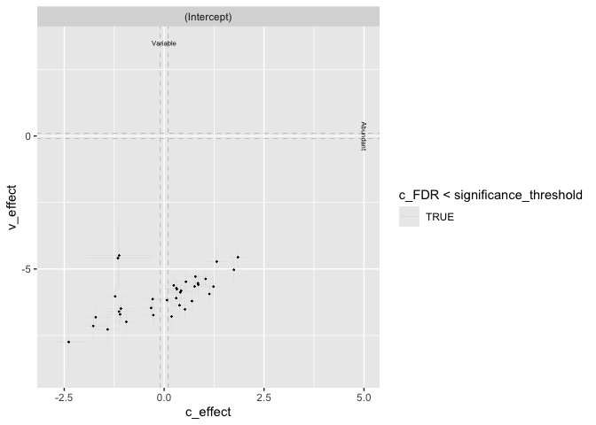
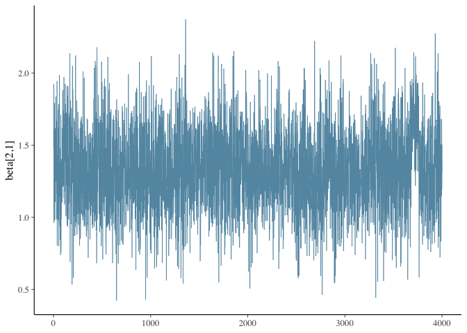
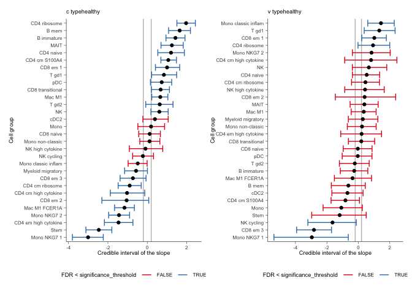
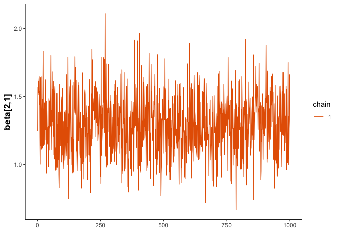

sccomp - Outlier-aware and count-based compositional analysis of single-cell data ================

sccomp tests differences in cell type proportions from single-cell data. It is robust against outliers, it models continuous and discrete factors, and capable of random-effect/intercept modelling.
Please cite PNAS - sccomp: Robust differential composition and variability analysis for single-cell data
Characteristics
- Complex linear models with continuous and categorical covariates
- Multilevel modelling, with population fixed and random effects/intercept
- Modelling data from counts
- Testing differences in cell-type proportionality
- Testing differences in cell-type specific variability
- Cell-type information share for variability adaptive shrinkage
- Testing differential variability
- Probabilistic outlier identification
- Cross-dataset learning (hyperpriors).
Installation
Bioconductor
if (!requireNamespace("BiocManager")) install.packages("BiocManager")
BiocManager::install("sccomp")Github
devtools::install_github("stemangiola/sccomp")| Function | Description |
|---|---|
sccomp_estimate |
Fit the model onto the data, and estimate the coefficients |
sccomp_remove_outliers |
Identify outliers probabilistically based on the model fit, and exclude them from the estimation |
sccomp_test |
Calculate the probability that the coefficients are outside the H0 interval (i.e. test_composition_above_logit_fold_change) |
sccomp_replicate |
Simulate data from the model, or part of the model |
sccomp_predict |
Predicts proportions, based on the mode, or part of the model |
sccomp_remove_unwanted_variation |
Removes the variability for unwanted factors |
plot |
Plors summary plots to asses significance |
Analysis
sccomp can model changes in composition and variability. By default, the formula for variability is either ~1, which assumes that the cell-group variability is independent of any covariate or ~ factor_of_interest, which assumes that the model is dependent on the factor of interest only. The variability model must be a subset of the model for composition.
Binary factor
Of the output table, the estimate columns start with the prefix c_ indicate composition, or with v_ indicate variability (when formula_variability is set).
From Seurat, SingleCellExperiment, metadata objects
sccomp_result =
single_cell_object |>
sccomp_estimate(
formula_composition = ~ type,
.sample = sample,
.cell_group = cell_group,
bimodal_mean_variability_association = TRUE,
cores = 1
) |>
sccomp_remove_outliers(cores = 1) |> # Optional
sccomp_test()From counts
sccomp_result =
counts_obj |>
sccomp_estimate(
formula_composition = ~ type,
.sample = sample,
.cell_group = cell_group,
.count = count,
bimodal_mean_variability_association = TRUE,
cores = 1, verbose = FALSE
) |>
sccomp_remove_outliers(cores = 1, verbose = FALSE) |> # Optional
sccomp_test()Summary plots
plots = sccomp_result |> plot() ## [1m[22mJoining with `by = join_by(cell_group, sample)`
## Joining with `by = join_by(cell_group, type)`A plot of group proportion, faceted by groups. The blue boxplots represent the posterior predictive check. If the model is likely to be descriptively adequate to the data, the blue box plot should roughly overlay with the black box plot, which represents the observed data. The outliers are coloured in red. A box plot will be returned for every (discrete) covariate present in formula_composition. The colour coding represents the significant associations for composition and/or variability.
plots$boxplot
A plot of estimates of differential composition (c_) on the x-axis and differential variability (v_) on the y-axis. The error bars represent 95% credible intervals. The dashed lines represent the minimal effect that the hypothesis test is based on. An effect is labelled as significant if bigger than the minimal effect according to the 95% credible interval. Facets represent the covariates in the model.
plots$credible_intervals_1D
We can plot the relationship between abundance and variability. As we can see below, they are positively correlated, you also appreciate that this relationship is by model for single cell RNA sequencing data.
sccomp models, these relationship to obtain a shrinkage effect on the estimates of both the abundance and the variability. This shrinkage is adaptive as it is modelled jointly, thanks for Bayesian inference.
plots$credible_intervals_2D
Contrasts
seurat_obj |>
sccomp_estimate(
formula_composition = ~ 0 + type,
.sample = sample,
.cell_group = cell_group,
bimodal_mean_variability_association = TRUE,
cores = 1, verbose = FALSE
) |>
sccomp_test( contrasts = c("typecancer - typehealthy", "typehealthy - typecancer"))## [90m# A tibble: 60 × 18[39m
## cell_group parameter factor c_lower c_effect c_upper c_pH0 c_FDR c_n_eff
## [3m[90m<chr>[39m[23m [3m[90m<chr>[39m[23m [3m[90m<chr>[39m[23m [3m[90m<dbl>[39m[23m [3m[90m<dbl>[39m[23m [3m[90m<dbl>[39m[23m [3m[90m<dbl>[39m[23m [3m[90m<dbl>[39m[23m [3m[90m<dbl>[39m[23m
## [90m 1[39m B immature typecanc… [31mNA[39m -[31m1[39m[31m.[39m[31m88[39m -[31m1[39m[31m.[39m[31m34[39m -[31m0[39m[31m.[39m[31m810[39m 0 [90m [39m 0 [90m [39m [31mNA[39m
## [90m 2[39m B immature typeheal… [31mNA[39m 0.810 1.34 1.88 0 [90m [39m 0 [90m [39m [31mNA[39m
## [90m 3[39m B mem typecanc… [31mNA[39m -[31m2[39m[31m.[39m[31m25[39m -[31m1[39m[31m.[39m[31m66[39m -[31m1[39m[31m.[39m[31m0[39m[31m5[39m 0 [90m [39m 0 [90m [39m [31mNA[39m
## [90m 4[39m B mem typeheal… [31mNA[39m 1.05 1.66 2.25 0 [90m [39m 0 [90m [39m [31mNA[39m
## [90m 5[39m CD4 cm S10… typecanc… [31mNA[39m -[31m1[39m[31m.[39m[31m54[39m -[31m1[39m[31m.[39m[31m0[39m[31m2[39m -[31m0[39m[31m.[39m[31m525[39m 0 [90m [39m 0 [90m [39m [31mNA[39m
## [90m 6[39m CD4 cm S10… typeheal… [31mNA[39m 0.525 1.02 1.54 0 [90m [39m 0 [90m [39m [31mNA[39m
## [90m 7[39m CD4 cm hig… typecanc… [31mNA[39m 0.594 1.57 2.55 7.50[90me[39m[31m-4[39m 1.25[90me[39m[31m-4[39m [31mNA[39m
## [90m 8[39m CD4 cm hig… typeheal… [31mNA[39m -[31m2[39m[31m.[39m[31m55[39m -[31m1[39m[31m.[39m[31m57[39m -[31m0[39m[31m.[39m[31m594[39m 7.50[90me[39m[31m-4[39m 1.25[90me[39m[31m-4[39m [31mNA[39m
## [90m 9[39m CD4 cm rib… typecanc… [31mNA[39m 0.200 0.860 1.52 1.30[90me[39m[31m-2[39m 3.50[90me[39m[31m-3[39m [31mNA[39m
## [90m10[39m CD4 cm rib… typeheal… [31mNA[39m -[31m1[39m[31m.[39m[31m52[39m -[31m0[39m[31m.[39m[31m860[39m -[31m0[39m[31m.[39m[31m200[39m 1.30[90me[39m[31m-2[39m 3.50[90me[39m[31m-3[39m [31mNA[39m
## [90m# ℹ 50 more rows[39m
## [90m# ℹ 9 more variables: c_R_k_hat <dbl>, v_lower <dbl>, v_effect <dbl>,[39m
## [90m# v_upper <dbl>, v_pH0 <dbl>, v_FDR <dbl>, v_n_eff <dbl>, v_R_k_hat <dbl>,[39m
## [90m# count_data <list>[39mCategorical factor (e.g. Bayesian ANOVA)
This is achieved through model comparison with loo. In the following example, the model with association with factors better fits the data compared to the baseline model with no factor association. For comparisons check_outliers must be set to FALSE as the leave-one-out must work with the same amount of data, while outlier elimination does not guarantee it.
If elpd_diff is away from zero of > 5 se_diff difference of 5, we are confident that a model is better than the other reference. In this case, -79.9 / 11.5 = -6.9, therefore we can conclude that model one, the one with factor association, is better than model two.
library(loo)
# Fit first model
model_with_factor_association =
seurat_obj |>
sccomp_estimate(
formula_composition = ~ type,
.sample = sample,
.cell_group = cell_group,
bimodal_mean_variability_association = TRUE,
cores = 1,
enable_loo = TRUE
)
# Fit second model
model_without_association =
seurat_obj |>
sccomp_estimate(
formula_composition = ~ 1,
.sample = sample,
.cell_group = cell_group,
bimodal_mean_variability_association = TRUE,
cores = 1 ,
enable_loo = TRUE
)
# Compare models
loo_compare(
model_with_factor_association |> attr("fit") |> loo(),
model_without_association |> attr("fit") |> loo()
)Differential variability, binary factor
We can model the cell-group variability also dependent on the type, and so test differences in variability
res =
seurat_obj |>
sccomp_estimate(
formula_composition = ~ type,
formula_variability = ~ type,
.sample = sample,
.cell_group = cell_group,
bimodal_mean_variability_association = TRUE,
cores = 1, verbose = FALSE
)
res## [90m# A tibble: 60 × 14[39m
## cell_group parameter factor c_lower c_effect c_upper c_n_eff c_R_k_hat
## [3m[90m<chr>[39m[23m [3m[90m<chr>[39m[23m [3m[90m<chr>[39m[23m [3m[90m<dbl>[39m[23m [3m[90m<dbl>[39m[23m [3m[90m<dbl>[39m[23m [3m[90m<dbl>[39m[23m [3m[90m<dbl>[39m[23m
## [90m 1[39m B immature (Interce… [31mNA[39m 0.184 0.740 1.28 [31mNaN[39m 3.51
## [90m 2[39m B immature typeheal… type 0.443 1.19 1.94 [31mNaN[39m 3.50
## [90m 3[39m B mem (Interce… [31mNA[39m -[31m1[39m[31m.[39m[31m32[39m -[31m0[39m[31m.[39m[31m799[39m -[31m0[39m[31m.[39m[31m274[39m [31mNaN[39m 3.63
## [90m 4[39m B mem typeheal… type 0.751 1.49 2.24 [31mNaN[39m 3.52
## [90m 5[39m CD4 cm S100A4 (Interce… [31mNA[39m 1.09 1.65 2.20 [31mNaN[39m 3.51
## [90m 6[39m CD4 cm S100A4 typeheal… type -[31m0[39m[31m.[39m[31m120[39m 0.722 1.55 [31mNaN[39m 3.55
## [90m 7[39m CD4 cm high cyto… (Interce… [31mNA[39m -[31m1[39m[31m.[39m[31m18[39m -[31m0[39m[31m.[39m[31m505[39m 0.160 [31mNaN[39m 3.53
## [90m 8[39m CD4 cm high cyto… typeheal… type -[31m2[39m[31m.[39m[31m0[39m[31m6[39m -[31m1[39m[31m.[39m[31m18[39m -[31m0[39m[31m.[39m[31m295[39m [31mNaN[39m 3.49
## [90m 9[39m CD4 cm ribosome (Interce… [31mNA[39m -[31m0[39m[31m.[39m[31m288[39m 0.331 0.967 [31mNaN[39m 3.45
## [90m10[39m CD4 cm ribosome typeheal… type -[31m1[39m[31m.[39m[31m60[39m -[31m0[39m[31m.[39m[31m678[39m 0.210 [31mNaN[39m 3.59
## [90m# ℹ 50 more rows[39m
## [90m# ℹ 6 more variables: v_lower <dbl>, v_effect <dbl>, v_upper <dbl>,[39m
## [90m# v_n_eff <dbl>, v_R_k_hat <dbl>, count_data <list>[39mSuggested settings
For single-cell RNA sequencing
We recommend setting bimodal_mean_variability_association = TRUE. The bimodality of the mean-variability association can be confirmed from the plots$credible_intervals_2D (see below).
For CyTOF and microbiome data
We recommend setting bimodal_mean_variability_association = FALSE (Default).
Visualisation of the MCMC chains from the posterior distribution
It is possible to directly evaluate the posterior distribution. In this example, we plot the Monte Carlo chain for the slope parameter of the first cell type. We can see that it has converged and is negative with probability 1.

Plot 1D significance plot
plots = res |> sccomp_test() |> plot()## [1m[22mJoining with `by = join_by(cell_group, sample)`
## Joining with `by = join_by(cell_group, type)`
plots$credible_intervals_1D
Plot 2D significance plot. Data points are cell groups. Error bars are the 95% credible interval. The dashed lines represent the default threshold fold change for which the probabilities (c_pH0, v_pH0) are calculated. pH0 of 0 represent the rejection of the null hypothesis that no effect is observed.
This plot is provided only if differential variability has been tested. The differential variability estimates are reliable only if the linear association between mean and variability for (intercept) (left-hand side facet) is satisfied. A scatterplot (besides the Intercept) is provided for each category of interest. The for each category of interest, the composition and variability effects should be generally uncorrelated.
plots$credible_intervals_2D
The old framework
The new tidy framework was introduced in 2024, two, understand the differences and improvements. Compared to the old framework, please read this blog post.